АВТОНОМНАЯ
НЕКОММЕРЧЕСКАЯ
ОРГАНИЗАЦИЯ
«ТЕАТРЫ ПЕТЕРБУРГА»

О НАС
Автономная некоммерческая организация «ТЕАТРЫ ПЕТЕРБУРГА» зарегистрирована 15 июля 2014 года.
Задачей организации является поддержка независимых театральных проектов и развитие современного театра.
В рамках деятельности организации получили поддержку несколько постановок, театральных школ, фестивалей и драматургических лабораторий.
Мы будем рады сотрудничеству с вами!
Контактная почта: spbtheatres@gmail.com
СПЕКТАКЛИ
«Старуха. Хармс. Спектакль»
Едва ли не единственное произведение Даниила Хармса, написанное от первого лица, остается практически нетронутым – то есть таким, каким его создал сам писатель. Единственный актёр – главный герой, рассказчик и голос всех персонажей пьесы. Единственная декорация – простыни висящие на веревке то ли в Петербургском дворе-колодце,то ли в коридоре Ленинградской коммуналки,на которых черно-белыми картинками возникает мир, в котором живёт рассказчик. Этот спектакль слово нарисован рукой самого Хармса. Рукой, которая при ближайшем рассмотрении – то ли нож, то ли вилка.


Детская программа от Чемодан-дуэта «Квам»
«Цирк да и только!»
Пока артисты творят чудеса на сцене, в зале творится нечто невообразимое: зрители то хохочут, то восторженно замирают, открыв рот, то пытаются повторить за артистами «волшебные» жесты.
Андрей Князьков и Алексей Мельник расскажут вам о театре кукол, причем очень серьезно! Поскольку дети — народ любознательный, познакомиться с профессией кукольника можно будет прямо на сцене! Так сказать, методом погружения.


С 2016 года АНО «Театры Петербурга плотно содрудничает с Чемодан-дуэтом «Квам». В репертуре дуэта-эстрадное представление
«Как из ничего сделать все»
Весёлый музыкальный эксцентрический спектакль для взрослых в 2-х отделениях с антрактом где-то посередине. Спектакль объездил уже более 10 международных фестивалей и 12-ти стран мира, завоевав признание огромного количества российских и зарубежных зрителей!
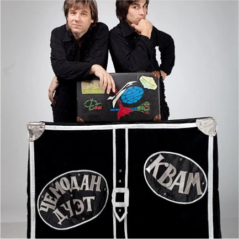
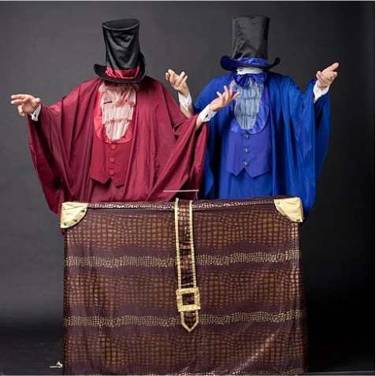
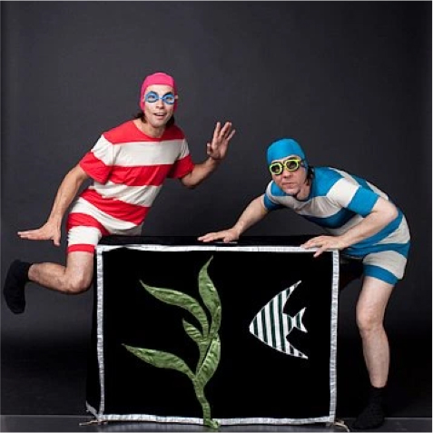
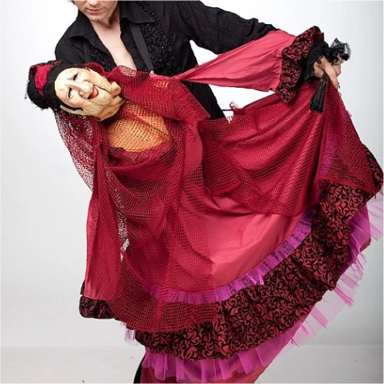
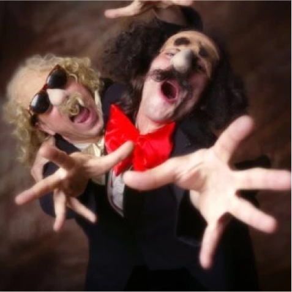
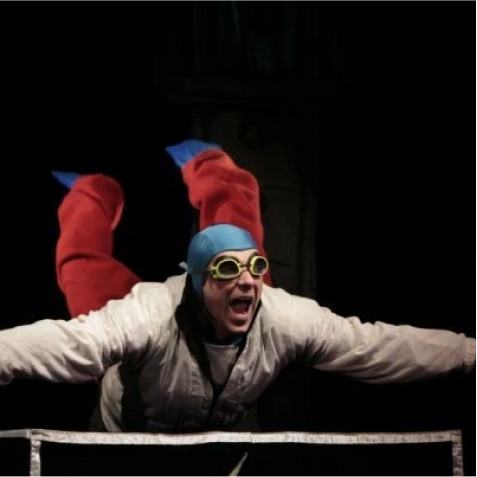
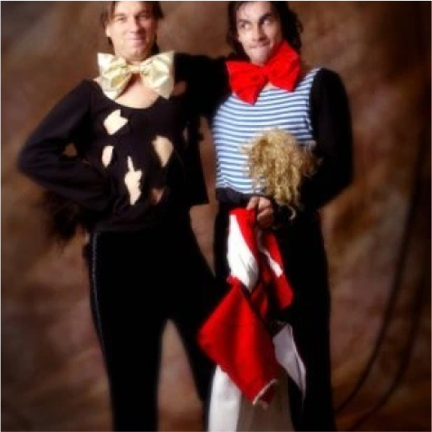
Музыкальный спектакль «Почему я такая дура?»
Музыкальный спектакль был создан в 2011 году и восстановлен в 2020 при поддержке АНО «ТЕАТРЫ ПЕТЕРБУРГА» на сцене театрального пространства «Скороход»
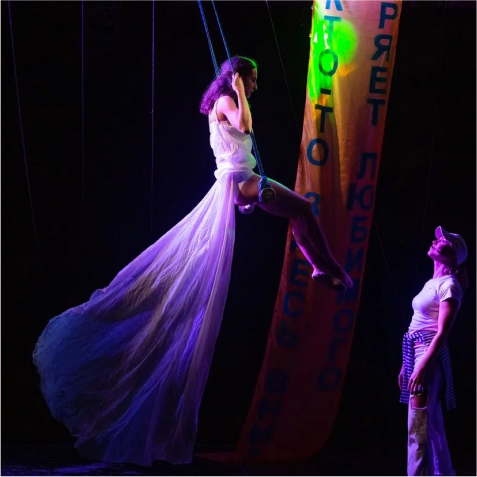
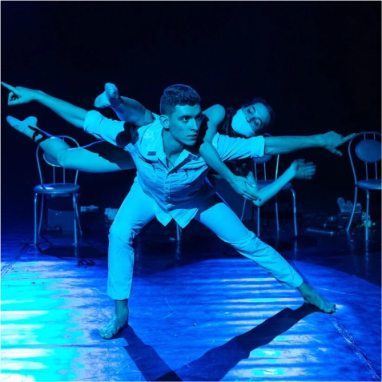
Детская интерактивная игра «Тихо! Идет репетиция!»
Проект, созданный АНО «Театры Петербурга» специально для площадки «Театральная Долина».По оценкам зрителей наша игра — один из лучших интерактивов города!
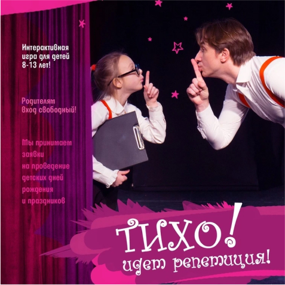
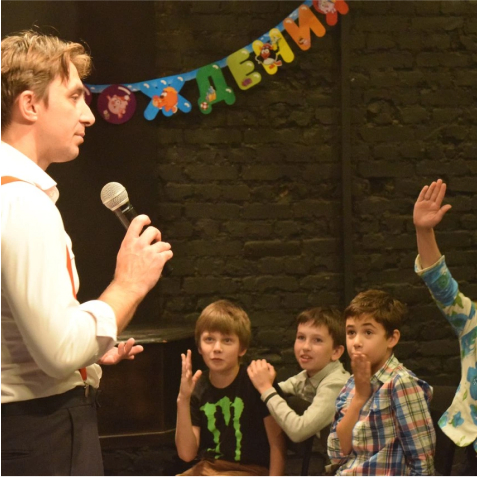
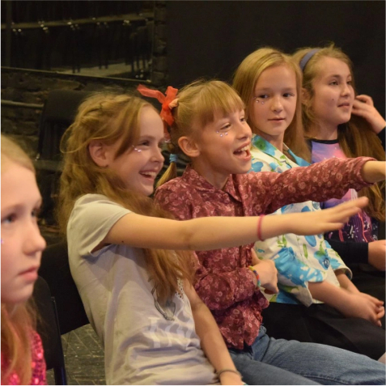
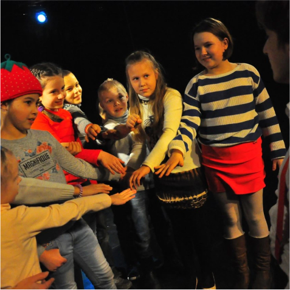
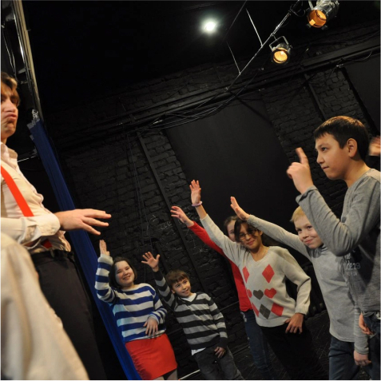
Спектакль «Откуда берутся дети?»
Этот спектакль — попытка взрослого, который возвращается домой из лагеря смерти Маутхаузен, «прыгнуть» в свое детство и даже примерить на себя роль собственного отца, влезть в его шкуру. От самого отца не осталось ничего, кроме воспоминаний и… нелепого чемодана, набитого всякой всячиной. Оказывается, в этом чемодане помещается целая вселенная!.. С его помощью можно путешествовать в космосе, тушить пожары, побеждать чудовищ и даже найти счастье, если очень хорошо его поискать. Два молодых артиста на сцене создают многомерный и многоликий мир — мир игры и настоящей жизни. Спектакль Леды Гариной вырос из творческого показа, представленного на лаборатории «Молодые режиссеры — детям» в рамках Седьмого Всероссийского фестиваля театрального искусства для детей «Арлекин» в апреле 2010 г. в Санкт-Петербурге. реж. Леда Гаринаактёры: Ирина Кривчёнок, Кирилл Павлов
художник: Елена Якименко
балетмейстер: Александра Вахтер
звукорежиссер: Николай Радецкий
художник по свету: Нина Силенко
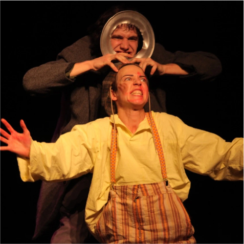
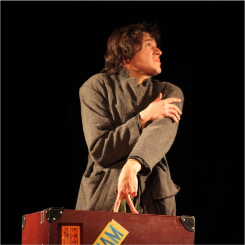
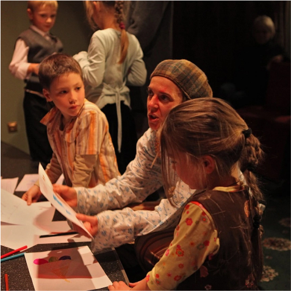
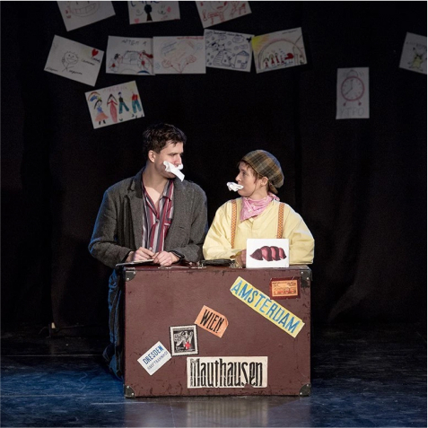
ФЕСТИВАЛИ
В феврале и мае 2021 года при поддержке
АНО «ТЕАТРЫ ПЕТЕРБУРГА» прошёл пятый фестиваль социального искусства «Рёбра Евы»
Фестиваль прошёл на площадках театра Поколений, театра «ЦЕХЪ» и театра «Лицедеи» в Санкт-Петербурге и в театральном Центре имени Вс. Мейерхольда в Москве.
В рамках спектакля было представлено более 30 спектаклей, лекций, эскизов и панельных дискуссий.
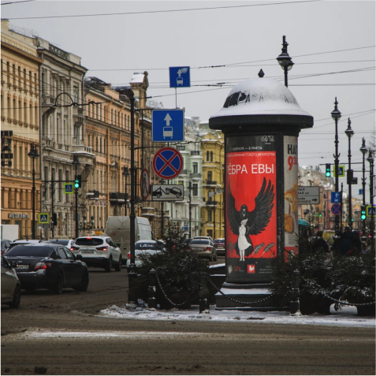
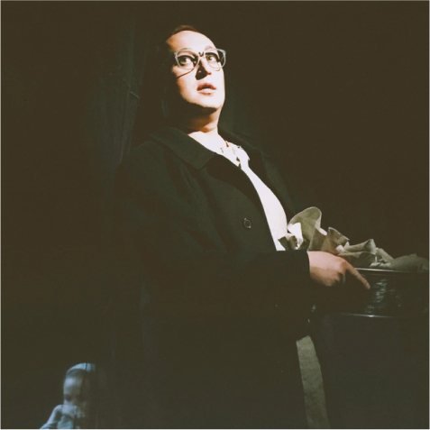
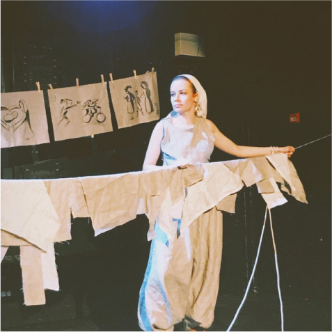
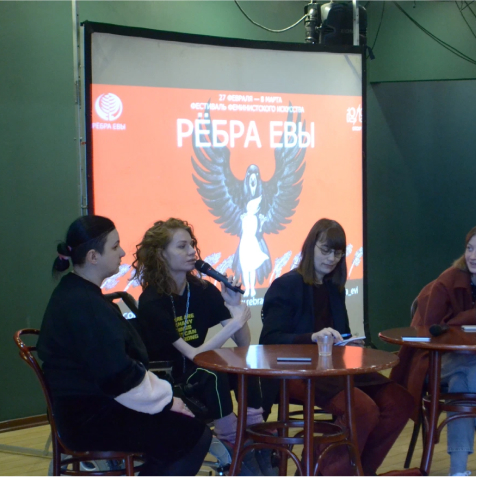
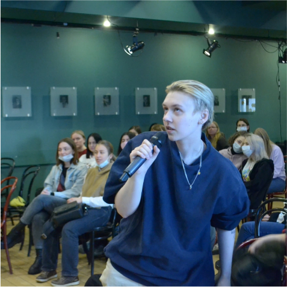
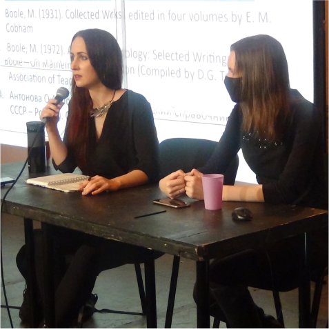
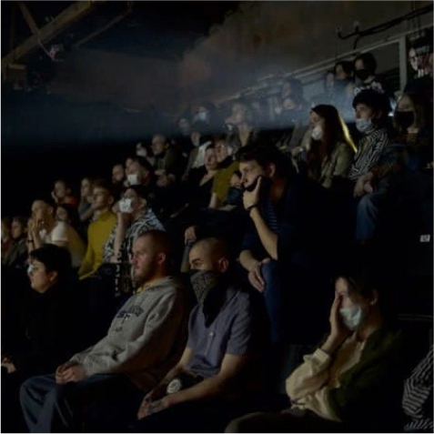
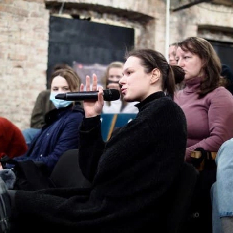
ЛАБОРАТОРИИ
Лаборатория современной драматургии «Ничья»
В марте 2021 года при поддержке АНО «Театры Петербурга» прошла лаборатория современной драматургии «Ничья». Лаборатория включила более 40 текстов, лучшие из которых были воплощены как эскизы на театральных площадках и улицах города.
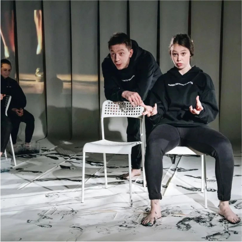
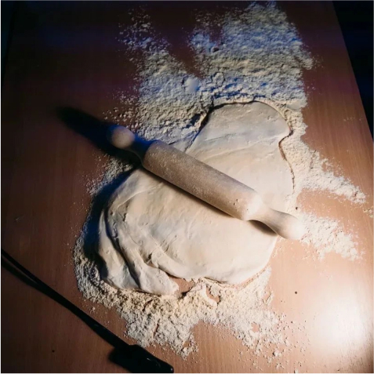
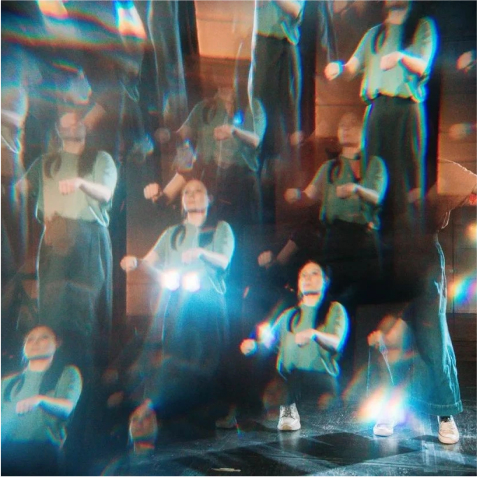
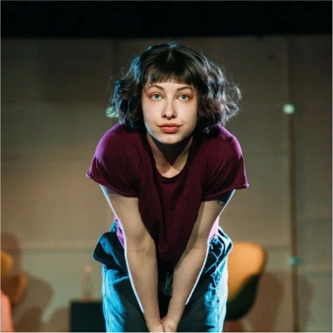
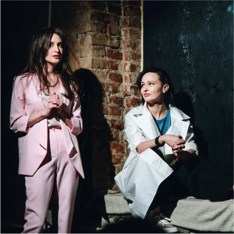
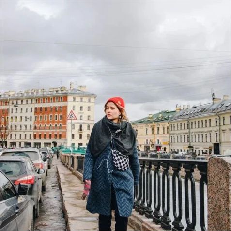
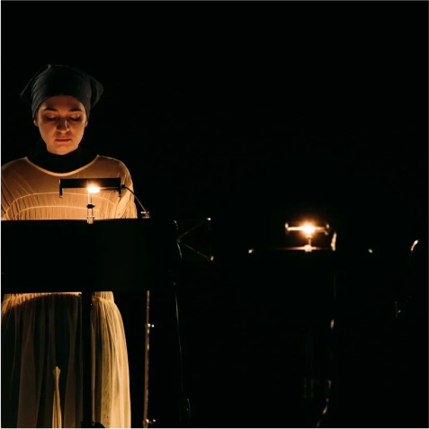
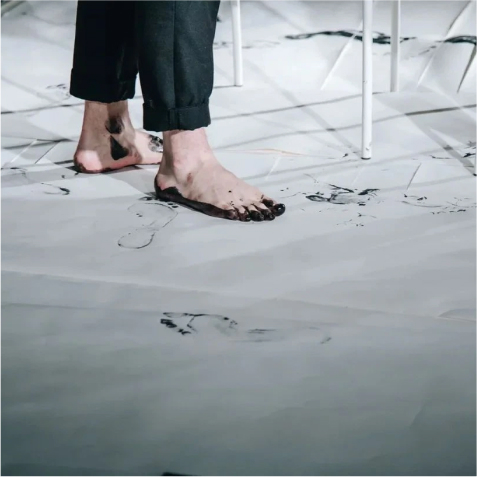
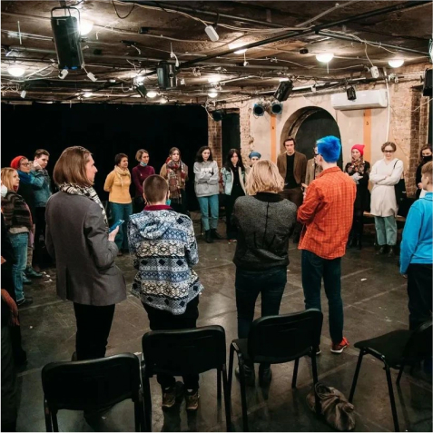
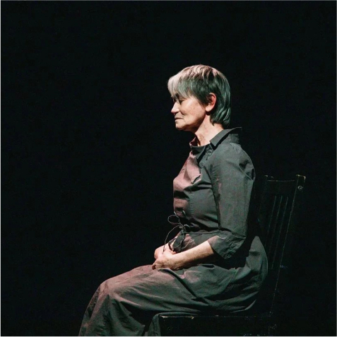
ГОТОВЯЩИЕСЯ ПРОЕКТЫ
Проект «Летняя театральная школа»
При участии АНО «Театры Петербурга» на базе площадки «Театральная Долина», что находится на территории музея современного искусства «Артмуза», в 2018 году для детей был организован проект «Летняя театральная неделя». В 2021 году планируется похожий проект «Летняя театральная школа». Организация проекта похожа на лагерь городского типа, где дети находятся с 9 утра до 18 вечера. В каждой смене — четыре недели по пять дней, в течение которых дети будут заниматься театральным творчеством на настоящей театральной сцене: с профессиональным звуком и светом, с кулисами и гримёркой. Каждую неделю ведут разные педагоги, которые научат детей разным театральным жанрам и способам существования
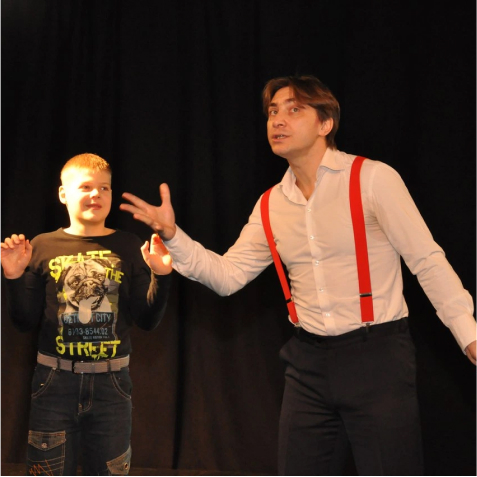
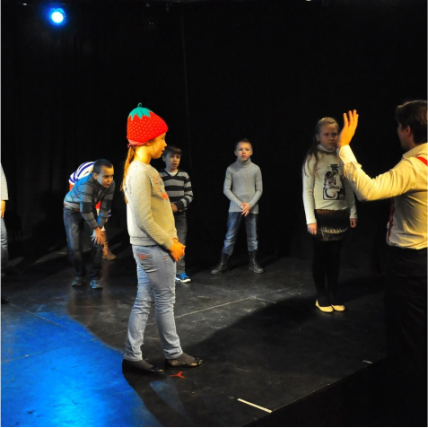
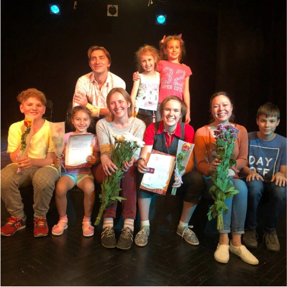
Готовится к постановке музыкальный спектакль «Витязь в Тигровой шкуре»
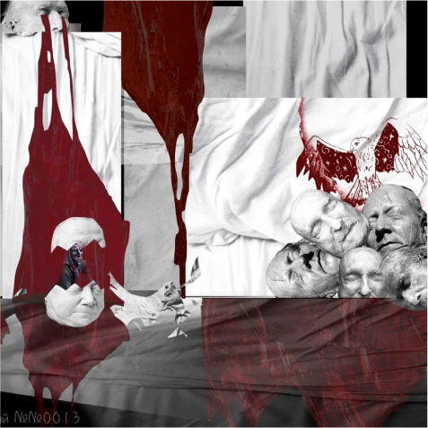
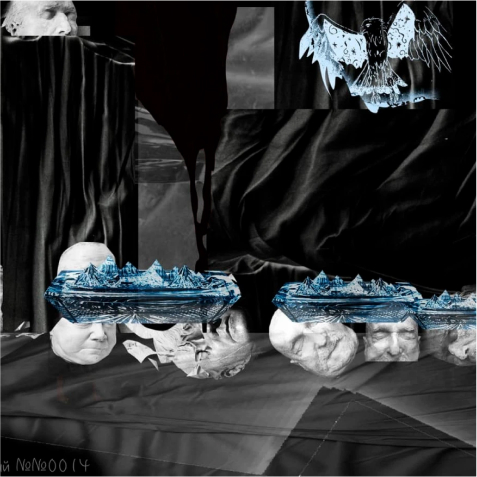
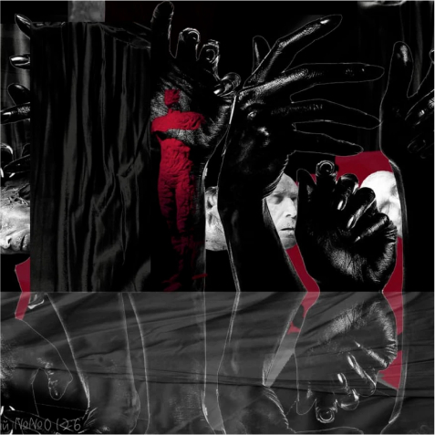